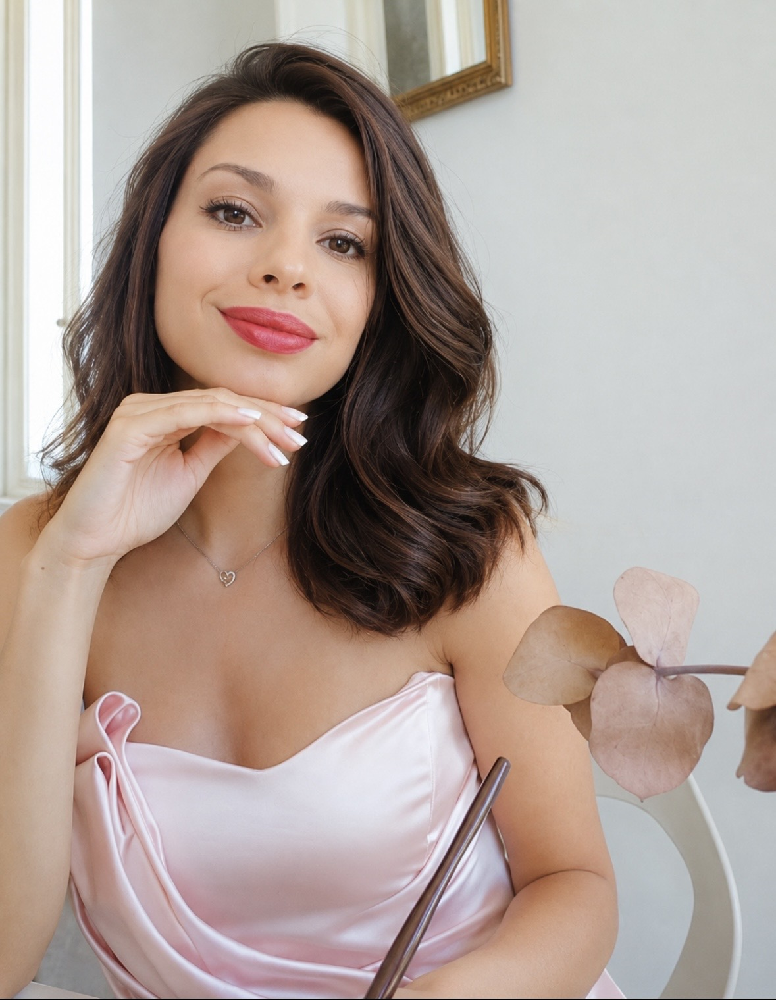

La loro anima,
in ogni pennellata.
Ritratti personalizzati di animali, dipinti ad acquerello per custodire per sempre uno sguardo, un carattere, un legame speciale.
Richiedi un ritrattoRitratti con personalità
Ogni opera nasce dall’osservazione dei dettagli che rendono ogni animale unico. Sfoglia la galleria e clicca su un ritratto per osservarlo più da vicino.

Ciao, sono Dina.
Amo raccontare attraverso l’acquerello la personalità degli animali: uno sguardo curioso, un’espressione buffa, la dolcezza di un compagno inseparabile. Ogni ritratto è realizzato con cura, per trasformare un legame speciale in un ricordo da tenere vicino.
Raccontami chi vuoi ricordare.
Ogni ritratto personalizzato parte da una fotografia e da una storia. Scrivimi per parlare del tuo animale, dell’idea che hai in mente e dei dettagli della commissione.
Scrivimi per commissionareEmail · dina2016@bk.ru
WhatsApp · @Dina0413